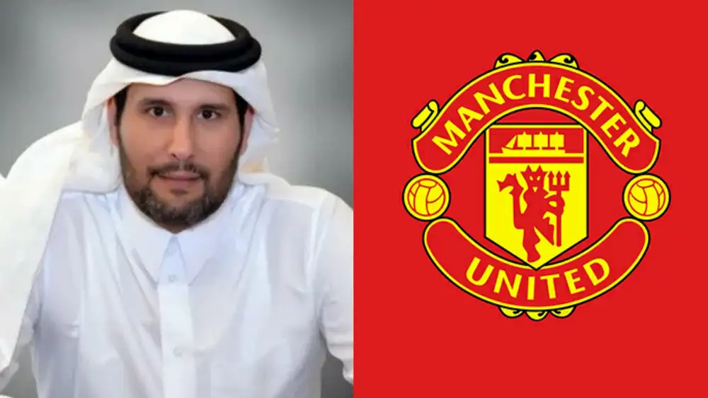

Makin Intens! Sheikh Jassim Bin Hamad Al Thani Ajukan Penawaran Kedua Untuk Manchester United

APA YANG TERJADI? Grup investasi asal
Qatar telah mengajukan penawaran pengambilalihan mereka yang lebih
baik, untuk membeli Manchester United.
Mereka menggunakan tenggat waktu yang diperpanjang klub untuk
mengirimkan tawaran terperinci. Fabrizio Romano telah melaporkan bahwa
grup tersebut "percaya diri" dan mereka "percaya tawaran ini adalah
yang terbaik untuk klub, penggemar, dan komunitas lokal."
GAMBARAN BESAR: Keluarga Glazer diharapkan bertahan untuk angka lebih dari £6 miliar, setelah penawaran diajukan pekan ini, menyusul kunjungan ke Old Trafford oleh perwakilan Sheikh Jassim, serta penawar saingan Sir Jim Ratcliffe.
APA LAGI: Setelah beberapa kebingungan
pada awal pekan, dengan kedua penawar tampaknya melewatkan tenggat
waktu Rabu (29/3) awal yang ditetapkan oleh Man United, sekarang jelas
bahwa semua tawaran telah diajukan.
Grup yang dikepalai oleh Sheikh Jassim dan Ratcliffe tampaknya menjadi
favorit, meskipun muncul juga bahwa pengusaha Finlandia Thomas
Zilliacus mengikuti perlombaan untuk memiliki klub tersebut, sementara
tawaran saham minoritas telah diajukan oleh hedge fund AS Elliott
Management.
APA SELANJUTNYA UNTUK INI? Dengan tenggat waktu yang telah lewat, keluarga Glazer akan mempertimbangkan semua penawaran yang diajukan. Mereka tidak berkewajiban untuk menerimanya, tetapi tampaknya pengambilalihan sudah mendekati kesimpulannya.